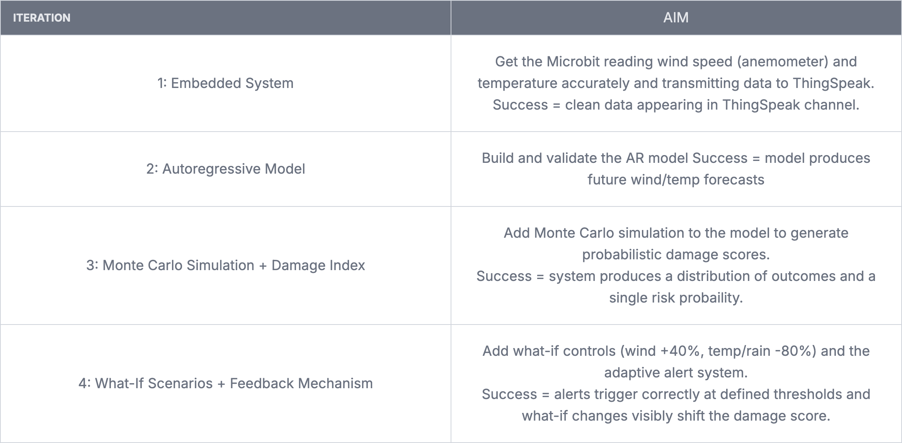

Plan and design
Why did I select this idea?
Forests are under threat to extreme weather
- Storm Eowyn demonstrated how extreme weather events can cause widespread damage to forests
- Strong winds lead to fallen trees and long-term ecological stress
System Objectives
- Measure wind speed and temperature in a forest environment using embedded sensors, operating automatically once started.
- Use an autoregressive model combined with Monte Carlo simulation to generate probabilistic forecasts of storm conditions and estimate Forestry Damage
- Trigger an adaptive, notification when the damage score crosses a risk thresholds, allowing Coillte forest managers to act before storm damage occurs.
Requirement solutions
Basic requirement 1
- To gather analog data I will use a cup anemometer and a thermometer
- To gather digital data I will make user input calibrate the system via mircobit buttons
- To have the system run automatically I will use a forever loop
Basic requirement 2
- To store enviromental data I will use ThingSpeak
- It provides easy, accurate and secure data storeage
Basic requirement 3
- To simulate real world conditions I will use a heater and a fan
Advanced requirement 1
- To model disaster risk I will use a monte carlo simulation and an auto regressive model
- Based on my investigation, winds above 64 mph cause structural tree damage — this informed my DSI threshold
Advanced requirement 2
- To explore how my model behaves under different scenarios I will allow the user to edit historical data
Advanced requirement 3
- To include a feedback mechanism I will send a notification to the device
- That adapts to weather conditions: e.g High risk = High priority notification with sound
Pseudocode


Technology stack
- Mircobit
- I am going to use over Raspberry Pi as I have worked with one before and mircobit handles all requirements
- Iot-environment kit
- Wind speed measurer - BR 1
- Temperature measurer - BR 1
- ThingSpeak - BR 2
- Heater and fan - BR 3
- Python
- Run predictive model - AR 1
- What-if simulations - AR 2
- Feedback mechanism - AR 3
System Design choices
- I will use a jupyter notebook rather than a python file
- Iterative Model Refinement: The cell-based structure enables me to tweak individual variables in my forestry damage algorithms and re-run simulations instantly
- Far more efficient for "what-if" scenario
- It gives more control over what to run and enhances how results are shown
- I will run the forestry damage algorithms on an external server as a mircobit will not be able to handle it
- I am choosing to use a monte carlo simulation because I'm predicting the potential outcomes of weather by simulating them thousands or millions of times, replacing uncertain variables with probability distributions
- I will use ThingSpeak over Data logger as Datalogger has size limitations and over Serial USB because it gave me accuracy problems in the past
Universal Design choices
- Simple, Interpretable risk output
- My system outputs a probaility rather than raw sensor readings. This is relevant to Imelda as a non-technical end user, she needs to make fast management decisions without needing to interpret wind speed arrays or AR model coefficients.
- Tiered Alert Notifications
- alert priority ensures the system is usable in a real operational environment where Imelda's team may be outdoors, distracted, or managing multiple tasks simultaneously
Approach I'm taking
Iterative
- Allows me to catch and fix bugs early
- Allows me to progressively refine the accuracy of my model
Project timeline
🕵🏻 Investigation
12 Dec 2025
📝 Plan and Design + Data gathering
9 Jan 2026
🛠️ Create : Embedded system
16 Jan 2026
🛠️ Create : Auto regressive prediction model
30 Jan 2026
🛠️ Create : Monte carlo simulation
6 Feb 2026
🛠️ Create : What-If senarios
13 Feb 2026
🛠️ Create : Feedback Mechanism
27 Feb 2026
🧪🔬🧑🏻💻 Testing
6 March 2026
📽️ Video
13 Mar 2026
🤔 Evaluation/Reflection
16 Mar 2026

Stake holder

What if questions
- What if wind increased by 40% ?
- What if temperature and rain decreased by 80% ?
Core Modules
- ThingSpeak API: Data storeage
- Numpy: Numerical operations
- Pandas: Working with CSV files and data
- MatPlotlib: Plotting results for visualsiation
Different project options
- I considered creating wildfire model because fires also pose large risks to forests
- But Im going to stick with storm risk modelling as I have a solid plan in place
Abstraction
- I orginally was going to use Humidity and soil mositure measurements in my embedded system
- However after my investigation I discovered they are weighted very low
- Therefore it is not worth the cost of added this to my system and I will focus on wind and temperature as I feel these are essential to maintaining the essence of the embedded system